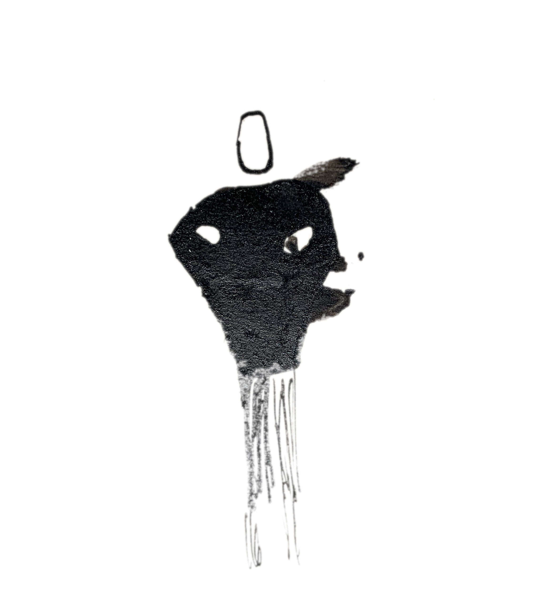

<!DOCTYPE html>

<html lang="en">
  <head>
    <meta charset="utf-8" />
    <title>objet</title>
    <meta name="keywords" content="guitar, looper, keiko tsuda, fnog" />
    <meta name="viewport" content="width=device-width, initial-scale=1.0" />
    <script>
      !(function (t, e) {
        var o, n, p, r;
        e.__SV ||
          ((window.posthog = e),
          (e._i = []),
          (e.init = function (i, s, a) {
            function g(t, e) {
              var o = e.split(".");
              2 == o.length && ((t = t[o[0]]), (e = o[1])),
                (t[e] = function () {
                  t.push([e].concat(Array.prototype.slice.call(arguments, 0)));
                });
            }
            ((p = t.createElement("script")).type = "text/javascript"),
              (p.async = !0),
              (p.src = s.api_host + "/static/array.js"),
              (r = t.getElementsByTagName("script")[0]).parentNode.insertBefore(
                p,
                r
              );
            var u = e;
            for (
              void 0 !== a ? (u = e[a] = []) : (a = "posthog"),
                u.people = u.people || [],
                u.toString = function (t) {
                  var e = "posthog";
                  return (
                    "posthog" !== a && (e += "." + a), t || (e += " (stub)"), e
                  );
                },
                u.people.toString = function () {
                  return u.toString(1) + ".people (stub)";
                },
                o =
                  "capture identify alias people.set people.set_once set_config register register_once unregister opt_out_capturing has_opted_out_capturing opt_in_capturing reset isFeatureEnabled onFeatureFlags getFeatureFlag getFeatureFlagPayload reloadFeatureFlags group updateEarlyAccessFeatureEnrollment getEarlyAccessFeatures getActiveMatchingSurveys getSurveys".split(
                    " "
                  ),
                n = 0;
              n < o.length;
              n++
            )
              g(u, o[n]);
            e._i.push([i, s, a]);
          }),
          (e.__SV = 1));
      })(document, window.posthog || []);
      posthog.init("phc_vqKUfwb05UaNZESJUtnmW25GZgZ7DabNlSXsmSyj0mB", {
        api_host: "https://e.abla.io",
      });
    </script>
    <!--<link href="https://fonts.googleapis.com/css2?family=Roboto+Mono&display=swap" rel="stylesheet"> -->
    <style>
      @font-face {
        font-family: Inter, sans-serif;
        font-style: normal;
        font-weight: 400;
        url:
        src: local(""),
          url("../include/Inter-Regular.woff2") format("woff2"),
      }
      body {
        background-color: #FFFEF7;
        max-width: 800px;
        color: #2d1e2f;
        line-height: 1.6;
        font-family: "Inter", monospace;
        font-size: 1em;
        margin: 40px auto;
        padding: 0 10px;
      }
      code {
        font-size: 1.6em;
        color: #2d1e2f;
      }
      h1 {
        font-weight: bold;
        font-size: 1.6em;
        margin-top: 2em;
      }
      hr {
        margin-top: 4em;
        border: none;
        background-color: #555;
        color: #2d1e2f;
        height: 1px;
      }
      a {
        color: #2d1e2f;
      }
      a:hover {
        color: #2d1e1f;
      }
      img {
        margin-top: 4em;
        margin-bottom: 2em;
        max-width: 100%;
      }
      input {
        font-family: inherit;
      }
    </style>
  </head>
  <body>
    <br />
    <br />
  </body>
</html>
<h1>Rosemary - a novel</h1>
<p></p>
<h2>Romusiquan</h2>
<p>Rosemary is a novel. Rosemary is music. Both are complementary and can be read
and listened to at the same time, or read silently and listened to without
reading. Rosemary was born between June 2021 and June 2022 from a desire to
write text and music at the pace of one chapter and one piece of music per month
(over a year of 13 months). The text is reflected in the music, with its
duration, intensity, and structure adapting to an average reading speed. The
music inspired the text, which fed off the sound.</p>
<p>The paper book is available here: BOD link</p>
<p>The music awaits here: BANDCAMP link</p>
<p>If the combined vibrations of the text and music resonate with you, spread the
word.</p>
<p>If nothing vibrated except boredom, talk to the author (email link)</p>
<h2>Impressions</h2>
<p>&quot;I really liked the universe of the book, but the music disturbed my reading&quot; -
Draghi Williamson</p>
<p>&quot;I don't like reading and I don't like music. But I still had a good time&quot; -
Brand Ophil</p>
<p>&quot;It's conceptual and uncommon.&quot; - Oswald (machine designer)</p>
<p>&quot;WTF?&quot; - Rose-Marie</p>
<h2>Excerpts</h2>
<p>You can read an excerpt from the book <a href="gabarit-abrupt.html">here</a>.</p>
<blockquote>
<p>The novel is in french. I have neither the time nor the skills to do the
translation. But if anyone with these two resources wants to do it, they can
contact me.</p>
</blockquote>
<h2>Word from the author/composer</h2>
<p>Is writing a novel similar to writing music? Can we improvise a text like we
improvise a solo? Does a text play on our mood like a piece of music can?</p>
<p>I have felt a similarity for a long time. As a musician, I try to make music
that &quot;tells&quot; something. Pieces with a beginning, a development, an end. By
arranging surprises, suspense, falls. By evoking atmospheres, states of &quot;being,&quot;
and feelings. By putting in style, anchoring in traditions, innovations that
break conventions. By searching a lot and sometimes finding. Passages, tunnels,
paths to clear. Making mistakes too: too much of this, too much of that.</p>
<p>Taking risks in publishing your music is like publishing a text. Everyone has an
opinion on music. Everyone is immersed in it. We think we've found it. We come
up against incomprehension. Or worse, disinterest.</p>
<p>I wanted to resonate these two practices. I had pieces of text like I have bits
of music in my drawers. Interesting enough for me not to throw them away, not
complete enough to publish them. So for a year, I set myself this challenge: one
piece and one chapter of a novel each month. That communicate, follow each
other, and observe each other. Not so simple. Music cannot bring the richness of
meaning that words can. It can just highlight them. Give them a setting of
sounds that complements them. A bit like a film score deepens the viewer's
immersion, helps them get into a story. You have to make the sonority of words
collaborate with that of notes, the rhythm of the sentence with that of the
measure, the logic of the paragraph with that of the theme, the coherence of the
chapter with that of the piece, the finiteness of the book with that of the
compilation. Leave nothing to chance and give a chance to all ideas.</p>
<p>I usually read while listening to music, write while listening to music, and
generally work with music. It helps me concentrate, isolate myself. With the
double experience of writing and composing, I took immense pleasure in seeking
the alchemy. I wove a story that was close to my heart and recorded sounds that
would tint the literary work. I hope I haven't betrayed either practice by
modestly trying to overlay them. If some of this pleasure is felt in the
reading/listening of Rosemary, I will be delighted.</p>
<hr/>
<p>objet &mdash; updated 04/25/24</p>
<p>this site does not track you</p>
</body>
</html>
